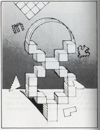
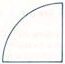

It's been a while since you experienced the thrill of running your first successful program on the Aquarius Home Computer. And now you're enjoying the satistfaction - the independence - that comes from being proficient at programming in BASIC.
Are you ready for more? More programming possibilities, more flexibility, more fun? That's what Extended BASIC gives you. You can still use all the features of Regular BASIC, plus the extra features offered by Extended BASIC.
With extended BASIC, you'll be able to edit programs more efficiently and create beautiful graphics. You can add charts and graphs and lively animation to your repertoire of programming abilities. Extended BASIC can spice up your programs so much that you may discover a new fascination with programming.
Keep an eye out for special "road signs" in this book. They point to tips and facts that will make your computer experience smoother and more enjoyable.
KEY IDEAS
TRY THIS
BY THE WAY
REMINDER
GOOD HABITS
COMPUTER TALK
CONTROL SHORTCUTS
Finally, wherever your computer takes you, have a great time!
Model No.
Serial No.
Notice-Project TV Ownders
Some stationary game patterns produced by this product may be permenantly imprinted on Projection TV tubes by extended use at high brightness levels. Consult Project TV Owners's manual before use of this product.
NOTE:
TABLE OF CONTENTS
INTRODUCTION
What is Extended BASIC?
What You Should Already Know
What This Guide Tells You
The Extensions of Extended BASIC
How to Load and Unlaod Extended BASIC
A Reminder About Cold Starts, Warm Starts, and Crashes
Another Reminder - Immediate and Programmed Mode
A Word About Subcommands
Quick Reference Tables
Clearing the Screen With CLS
CHAPTER 1 - MAKE A MISTAKE? ME? -
The EDIT Statement
How EDIT Works - Insert mode
The EDIT Subcommands
Quick Reference Tbale
CHAPTER 2 - AQUARIUS AS ARTIST
The X-Y Axis and Color
The X-Y Axis
Adding Color
CHAPTER 3 - DRAWING DOT TO DOT - The LINE Statement
The Simplest LINE Statement
Lines in Living Color
Boxes Made of Lines
Using STEP with the LINE Statement
Using Numeric Expression With the LINE Statement
Quick Reference Table
CHAPTER 4 - 'ROUND AND ROUND WE GO' - The CIRCLE Statement
Drawing Circles
Using Numeric Expressions With the CIRCLE Statement
Drawing Arcds and Pie Slices
Drawing Ellipses
Moitting Options in the CIRCLE Statement
Quick Reference Table
CHAPTER 5 - LET'S DRAW SOME MORE - The DRAW Statement
The Basic Subcommands
The M,B and N Subcommands
The A, C and S Subcommands
Quick Reference Table
CHAPTER 6 - EVEN MOVING THE CURSOR CAN BE FUN - The LOCATE Statement
CHAPTER 7 - FASTER ANIMATION - The GET and PUT Statements
GET
PUT
Quick Reference Table
CHAPTER 8 - WHAT'S ON THE MENU? = The MENU Statement
How to Write MENU Statements
Quick Reference Table
CHAPTER 9 - DEFINING YOUR OWN FUNCTIONS - The DEF Statement
How to Use DEF
Quick Reference Table
APPENDIX A
Error Messages
Memory Maps
Graphics Characters
Reserved Words
APPENDIX B
Practice Programs
ATN
INTRODUCTION
WHAT IS EXTENDED BASIC?
"Regular" BASIC is the version of BASIC language that came with your Aquarius computer when you bought it. "Extended" BASIC allows you to continue using Regular BASIC, as well as a number of "extensions" or features that Regular BASIC does not include. Unlike Regular BASIC, Extended BASIC is not built into your Aquarius computer, you use it by plugging in a seperate cartridge.
WHAT YOU SHOULD ALREADY KNOW
Extended BASIC is easy to learn, as easy as Regular BASIC. However, to take full advantage of Extended BASIC, you should be thorougly familiar with Regular BASIC as it is explained in the Aquarius Guide To Home Computing. In fact, if you haven't used some of the Regular BASIC statements for a while, especially POKE, PSET, and PRESET, it would be a good idea to review the Guide to Home Computer before reading this guide.
WHAT THIS GUIDE TELLS YOU
The Aquarius Guide to Extended BASIC tells you how to use the extensions, the features that are not part of Regular BASIC. It does not re-explain the statements and operation of Regular BASIC.
Throughout this guide you will see references to the Guide to Home Computing, as well as occasional reminders concerning certain concepts and procedures you may have forgotten, For the most part though, the Guide to Extended BASIC assumes you understand all the statements and operations of Regular BASIC.
THE EXTENSIONS OF EXTENDED BASIC
The extra programming features offered by Extended BASIC are listed below, along with brief explanataions of each.
<<<
PROGRAM EXPLANATION
CLS Clears the screen
EDIT Helps you change or correct program lines quickly and efficiently
LINE Helps you draw lines and boxes
CIRCLE Helps you draw circles, ellispes, and pie shapes
DRAW Gives you added flexibility in drawing lines and shapes
LOCATE Allows you to place the cursor on the screen between columns 1 and 38
GET and PUT Helps you achieve fast animation by recalling images stored in arrays
MENU Helps you construct menus or lists of operations for a user to choose from
DEF Defines numeric functions that can be used in a program the same as a built-in BASIC function
ATN Gives you the arc tangent of an angle to help you determine at what angle to move characters across the screen
HOW TO LOAD AND UNLAOD EXTENDED BASIC
As we mentioned earlier, Extended BASIC is stored on a cartridge that plugs into your Aquarius Computer.
TO LOAD YOUR EXTENDED BASIC CARTRIDGE:
1. Make sure your Aquarius computer and TV set are plugged into a 110-volt ac outlet.
2. Make sure the computer and TV set are both turned on.
3. If you're not using a memory cartridge, insert the Extended BASIC cartridge into the cartidge port of the Aquarius computer, or int the front port of your Mini-Expander Module.
If you plan to use a memory cartridge.
A. Insert the memory cartridge into the rear port of the Mini-Expander Module.
B. Insert the Extended BASIC cartridge into the front port of the Mini-Expander Module.
C. Insert the Mini-Expander into the cartridge port of the Aquarius computer.
4. Connect the Aquarius computer to the TV set.
5. Set the Aquarius to channel 3 or 4, whichever is weaker in your area. Then tune your TV set to the same channel.
6. Turn on your Aquarius computer, then turn on the TV
7. If you plan to use a cassette recorder or printer, you may plug it in while the Aquarius is running.
8. Press RST and RTN. The words "Extended BASIC" and the Microsoft copyright statement appear at the top of the screen.
9 The "OK" prompt tells you that Extended BASIC is read for you to use.
TO REMOVE YOUR EXTENDED BASIC CARTRIDGE:
1. Turn off the TV.
2. Turn off the Aquarius computer
3. If you're not using a Mini-Expander Module, remove the Extended BASIC cartridge from the cartridge port.
If you are using a Mini-Expander Module, remove the Extended BASIC cartridge from the program port or simply remove the Mini-Expander Module from the Aquarius cartridge port.
4. if you don't plan to use the Aquarius computer for a while, unplug the computer and the peripherals from the 110-volt ac outlet.
A REMINDER ABOUT COLD STARTS, WARM STARTS, AND CRASHES
Remember that the Aquarius comuter can be restarted in two different ways. Pressing RST and RTN initiates a "cold start" you erase whatever program data is in the computer's memory.
Pressing RST followed by CTL-C causes a "warm start", data in memory is not erased, unless the system has crashed. Remember that a crash is when Aquarius stops working, as though it has had a nervous breakdown. Electrical problems can cause a crash, or, Aquarius may simply not know how to respond to certain sequences of keyboard commands. A warm start or cold start will usually get Aquarius going again.
ANOTHER REMINDER - IMMEDIATE AND PROGRAMMED MODE
Regular BASIC allows you to execute statements from either Immediate mode or Programmed mode. In Immediate mode the operation is carried out as soon as you press RTN. In Programmed mode you assing line numbers to the statements and execute them by typing RUN. Immediate mode and Programmed mode operate the same way in Extended BASIC as they do in Regular BASIC. The only extensions that may not be used in Immediate mode are DEF, MENU, and EDIT.
A WORD ABOUT SUBCOMMANDS
Many statements in Extended BASIC have what we call subcommands. Depending on which subcommand you specify whenusing a particular statement, you can achieve varying results. For example, to draw a line anywhere on the screen, you can use the LINE statement. But, if you add the B subcommand to your LINE statement. Aquarius draw a box,and if you add BF, Aquarius draws a box and fills it with a color you specify.
QUICK REFERENCE TABLES
At theend of each chapter that discusses a statement which uses subcommands, you'll find a quick reference table. This table:
1.gives you the format of the statement.
2. tells you where numeric expessions are allowed.
3. identifies the screen that the statement uses (Text mode or Graphics mode; these are explained in Chapter 2).
4. indicates which parts of the statement are optional, and
5. lists and explains the subcommands for that statement
Parts of the satement that are enclosed in brackets ([]) in the quick-reference tables are optional. For an example, look at the LINE statement quick-refence table at the end of Chapter 3. Everything enclosed in brackets is an option (x2,y2) is the only required part of the statement.
CLEARING THE SCREEN WITH CLS
The CLS statement of Extended BASIC clears the sceen the same way that PRINT CHR$(11) does in Regular BASIC. You can still use PRINT CHR$(11) in Extended BASIC, but it's faster to type CLS.
CLS can be used in Immediate mode or Programmed mode. Besides just clearing the screen, CLS erases colors, re-introducing the default values, black characters on a light blue background.
CHAPTER 1 - MAKE A MISTAKE? ME? -
THE EDIT STATEMENT
The EDIT statement allows you to quickly change program lines without having to retype everything. Since the EDIT statement is not essential to the use of the Extended BASICS's graphics features, you can skip this chapter for now if you wish. However, if you are interested in easy ways of making corrections and changes, read on.
Imagine typing this long PRINT statement
10 PRINT Please Don't Forget To Include Quotition Marks"
Maybe you noticed right away that we left off the first set of quotation markes, a common frustaration error. We'll just have to retype the entire line, right? Wrong. Extended BASIC's EDIT statement allows you to add, change, and delete characters in any program line without retyping the entire line.
HOW EDIT WORKS - INSERT MODE
Suppose you type.
10 PRINT Please Don't Forget"
You need to insert the quotation marks before the word Please. Type
EDIT 10 RTN
This puts you in EDIT mode and tells Aquarius you want to edit line 10. in response the cursor moves to the beginning of line 10. Start pressing the SPACE key. As you do, you'll notice that the characters on line 10 appear one by one ast the cursor passes by. Stop when the cursor is to the immediate right of PRINT. This is what the display looks like now:
10 Print ˇ
Press the "I" key. Nothing new appears on the screen, but you are now in Insert mode, which allows you to insert characters without retyping the line. Now enter the quotation marks. The quotation markes appear, and the cursor moves to the next character.
10 PRINT "ˇ
Pressing the RTN key at this point "saves" or makes permanent the changes to line 10, lists the remainder of the line, takes you out of Insert mode and EDIT mode, and moves the cursor to the first column below the edited line. Aquarius is now ready for another Extended BASIC command or statement.
You can use EDIT to change the program lines in any order you wish. In other words, if you've already entered lines 10 through 50 of a program, you can still edit line 40 by typing EDIT 40. After making the changes to line 40, you would simply resume entering program lines. The screen might look something like this:
10 INPUT "Hi, Whats your name";NA$
20 PRINT "how old are you. ";NA$
30 INPUT age
40 DAYS = agr*365
50 PRINT "Thats's at least";DAYS;"days"
EDIT 40
40 DAYS = age*365
50 PRINT "Goodbyte, ";NAS;
THE EDIT SUBCOMMANDS
The "I" for Insert mode is only one subcommand of EDIT. Here are some more.
X - ADVANCING THE CURSOR
Using X in EDIT mode advances the cursor to the end of the specified line and allows you to extend the line in the Insert mode. The maximum length when using X is 75 characters.
Example: Line 10 looks like this
10 INPUT "How Old Are you"
You want to add a seimicolon and an N to the end of the line. Enter Edit mode by typing:
EDIT 10 RTN
Now type X. This causes all of the line 10 to appear, with the cursor positioned at the end of the line:
10 INPUT "How Old Are You"ˇ
You're already in Insert mode, so type a semicolon followed by N.
10 INPUT "How Old Are You";Nˇ
Press RTN. The Change is saved and the cursor moves to the beginning of the line below line 10. You're now out of EDIT mode.
L - LISTING THE LINE
Use the L in EDIT mode to list the remainder of the line you're editing. When you use L you don't have to use the SPACE key to reveal the characters and you don't leave EDIT mode until you press RTN.
Example: Enter EDIT 10, Aquarius responds by typing:
10ˇ
Now type the L key. Aquarius immediately displays all of the line 10 and peaces the cursor on the next line down, but does not leave EDIT mode.
10 INPUT "How Old Are You";N
10 ˇ
You know that Aquarius has not left EDIT mode because the 10 has been redisplayed, signifying that Aquarius is expecting another EDIT subcommand. Notice the error in line 10? There should be a colon (:) before the NEXT statement. Now that the line is displayed, you can use the SPACE key to move the cursor over and use Insert mode to insert the colon.
GOOD HABITS
Whenever you use the EDIT command, regardless of the kind of editing you plan to do, its's a good idea to use the L subcommand to list the entire line before using any other subcommand. That way, you can see exactly what you are editing.
D - DELETING CHARACTERS
Using D in EDIT mode deletes characters starting at the cursor position.
Example: Line 10 looks like this:
10 PRINT PRINT "Hello"
Obviously, you don't need two PRINT keywords. Type EDIT 10 to enter EDIT ode. PRess the SPACE key until the cursor is over the position of the P of one of the PRINT statements. If the cursor is over the P of the second PRINT, the screen looks like this:
10 PRINTˇ
Now type SD. This tells Aquarius to delete the next five characters beginning at the cursor position. Aquarius response with:
10 PRINT / PRINT /
The backslashes tell you Aquarius understood your command and deleted everything between the slashes. If you wanted to insert characters at this point, you could press the "I" key to enter Insert Mode. Or you can just press RTN to save the change you made.
When using the D subcommand, one character deletion is the default. So, if you just enter D without specifying a number of characterss, one one is deleted.
H- DELTING MORE CHARACTERS
In EDIT mode, H deletes all characters from the cursor line to the end of the line, then automatically enters Insert Mode. If, after using H, you wish to enter new characters from the cursor position, simply type them in, since you're already in Insert Mode. If all you want to do is delete the characters, press RTN after using the H subcommand. The cursor moves down to the next line, and you're out of EDIT mode.
BY THE WAY
When you use the H subcommand, the deleted characters are no redisplayed between slashes as they are when you use the D subcommand. For example, before using the H subcommand, the cursor is over the w of what's in this line:
10 PRINT "Hello, what's your name?"
After using the H subcommand, the line looks like this:
10 PRINT "Hello"
Since you're in Insert mode at this point, you can enter new text after Hello, or you can press RTN to exit Insert mode and EDIT mode.
C - REPLACING CHARACTERS
With the C subcommand, you can replace characters starting at the cursor position and moving to the right. The Format of the C command is:
nC string
where n is a number of characters to be replaced and string is the replacement character or characters.
Example: Line 10 looks like this:
10 PRINT "Please enrre a number"
You want to change enrre to enter. Type EDIT 10. With the SPACE key, move the cursor to the first r in enrre
10 PRINT "Please enˇ
Now Type
3C ter
This command tells Aquarius to replace the next three characters - rre - with the string ter. The 3C won't appear on the screen but the ter wil. Press RTN to save the changes and list the remainder of the line.
If you don't specify the number of charactesr to be replaced, the C subcommand assumes you want to replace just one.
The C subcommand is only used to replace strings with an equal number of new charactesr. To replace a string with a different number of characters use the D subcommand to Delete the characters and the I subcommand to Insert new ones.
S - SEARCHING FOR CHARACTERS
When you want to move quickly to a specific character on a line, use the S command. The format is:
nS character
The character is a single character to which you want the cursor to move immediately. The n is the nth occurence of the character you are searching.
Example: Suppose line 10 of your program looks like this:
10 PRINT "What is your current interest rate?"
You decided you want to insert the word mortgage before interest. To get to that point in the line quickly, type EDIT 1, then
2St
This command places the cursor over the t i the word current. The number 2 in the command means the second t in the program line.
Once the cursore is over the t in the current, press the SPACE key twice to place it over the i in interest. Then use Insert mode (type "I") to enter the word mortgage, followed by a space. Press RTN to save the changes and to exit EDIT mode.
If you don't specify a number n with the character. Aquarius will find the first occurence of the character. And if the character you specify is not in the line, the cursor advances to the end of the line and the search ends, but EDIT mode is not terminated.
BY THE WAY
In all EDIT subcommands editing is done from left to right. You can't ove back to a point on the line you've alread passed. But you can simply leave EDIT mode by pressing RTN at the end of the line, and re-enter EDIT mode by issuing a new EDIT statement.
K - SEARCHING AND DELETING
The K subcommand works the same way as the S subcommand with one important excepion. As Aquarius searches for the character you specify in the K subcommand, all characters that the cursor passes are deleted. The deleted charactes are displayed between backslashes so you know that they have been deleted. For example, suppose line 10 looks like this:
10 PRINT "Are you sure,"N$
If you use the command 2K N, Aquarius deletes everything up to the second N in the line (The N of N$), displays the deleted charactes between backslashes, and places the cursore over the N of N$
10 /PRINT "Are you shoue," / N$
E - SAVING CHANGES
Typing E while in EDIT mode, regardless of the position of the cursor on the program line, saves your changes and takes you tou of the EDIT mode without displayng the remainder of the line.
Q = IGNORING CHANGES
Type Q in EDIT mode when you want Aquarius to disregard any changes you've just made to the program line. Using the Q subcommand takes you out of the EDIT Mode.
A - IGNORING CHANGES, BUT...
Typing A while in EDIT mode tells Aquarius to disregard the changes you've just made, reposition the cursor at the beginning of the line, and remain in EDIT mode. You can then make changes to the line and press RTN to save them.
QUICK REFERENCE TBALE
EDIT line number
Subcommands:
"I" Enters the Insert mode. After you press the "I" key to begin the Insert mode, the characters that you type are inserted at the cursor position. Character to the right of the cursor are moved to the right to make room for the insertion.
"X" Advances the cursor to the end of the line and allows you to extend the line in Insert mode.
"nD" Deletes the first n characters start at the cursor position. By default, one character is deleted at a time. Each character that you delete is displayed between backslashes.
"H" Deletes all of the characters from the cursor to the end of the line, and then enters Insert mode. Deleted characters are not displayed on the screen.
"nS character" Positions the cursor over the nth occurence of the character you specify. The cursor advances to the end of the line and the search ends if the search character is not found.
"nK character" Positions the cursor over the nth occurrence of the characters you specify. Characters that the cursor passes are deteled, and are displayed in backslashes. The cursor advances to the end of the line and the search ends if the search character is not found.
"nC string" Replaces the character(s) behind the cursor with the character(s) that you type. To change two or more successive characters, end the number of charactrs to be changed, the C subcommand, and then the replacement string. The replacement string is printed on the screen as you type it.
Note that this subcommand is used to replace charcter strings with an equal number of characters. To replace an unequal number of characters, delete the search string and insert the replacment characters one at a time using Insert mode.
"E" Saves editing changes and exits EDIT mode without listing the remainder of the line.
"Q" Exits EDIT mode without saving changes
"L" Listes the remainder of the line, saves editing changes, and returns the cursor to the beginning of the line in EDIT mode.
"A" Disregards editing changes made so far, and returns the cursor to the beginning of the line in EDIT mode. Pressing RTN saves editing changes made after you last entered the A command, and exits EDIT mode.
NOTE: Once in the Insert mode, you must press RTN in order to switch to a different subcommand.
CHAPTER 2 - AQUARIUS AS ARTIST
THE X-Y AXIS AND COLOR
You may remember that in Regular BASIC, Aquarius divides your TV screen into 24 rows and 40 columns for a total of 960 positions.
Extened BASIC uses these same positions, when you're in Text mode, the mode you use for entering statements and commands.
However, when you use the graphics or picture-drawing features of Extended BASIC, Aquarius divides the screen into 72 rows and 80 columns for a total of 5,760 positions. When you use the 72 x 80 screen, you're in "Graphics" model. The statements in Extended BASIC that use Graphics mode are LINE, CIRCLE, and DRAW.
Text Mode Screen Graphics Mode Screen
THE X-Y AXIS
Too draw pictures, Aquarius Needs to know which positions on the screen to fill in. For example, to draw a diagonal line, Aquarius would fill in character positions in a pattern like this.
The way that you tell Aquarius which positions to fill is by refering to "coordinates" on the X-Y axis. The columns are the X coordinates and the rows are the Y coordinates.
Each position on the screen can be identified by using a number from the X group and a number from the Y group in the format (X,Y). For example (0,0) is the home or upper left-most position. (1,0) is the position to the right of the home position, and (1,1) is directly below that.
Don't worry. You won't have to give Aquarius coordinates for every position you want filled in. That's why Extended BASIC has statements like LINE, DRAW, and CIRCLE. Aquarius figures out most of the coordinates for you. For drawing lines, you just specify the beginning and the ending coordinates and the colors you want (we talk about colors later). To draw curves and boxes you need to provide a few additional specifications. But in most cases, Aquarius does almost all the work for you.
Example: Suppose you wanted to draw a line like this
You don't have to specify ten different coordinates. Instead. you just specify the beginning position (0,2) and the ending positions (9,2), and use the LINE statement to tell Aquarius to draw a line between those coordinates. Aquarius figures out what the rest of the positions should be, and fills them in.

ADDING COLOR
In Regular BASIC, you set the foreground and background colors on the screen by using numbers from this color code list.
<<<<
COLOR CODE
Black 0
Red 1
Green 2
Yellow 3
Blue 4
Violet 5
Light Blue Green 6
White 7
Light Gray 8
Blue Green 9
Magenta 10
Dark Blue 11
Light Yellow 12
Light Green 13
Orange 14
Dark Gray 15
In Extended BASIC, you use this same code list; however, the Graphics statements of Extended BASIC, LINE, CIRCLE, and DRAW, only set the foreground colors. To set the background colors, you use the POKE statement as you did in Regular BASIC (See Chapter 6 of the Aquarius Guide to Home Computing).
REMINDER
The formula for specifying foreground and background color with the POKE statement is:
POKE (Screen position), (foreground color) * 16 + (background color)
Instead of using the formula, you can use numbers listed in the color table on the next page. Find the foreground color you want in the left column and the desired background color in the rop row. The number at their intersection is the number you use in your POKE statement. For example, to set position (0,0) to a yellow foreground (3) and blue back-ground(4), the statement would be:
POKE 12328,52
That's because 52 is the number at the intersection of foreground 3 and the background 4 in the table.
In Regular BASIC. the default background color is light blue and the default foreground color is black. In Extended BASIC, the default colors are the same except when you use LINE, CIRCLE, and DRAW. For these statements, the foreground color is blue. Background color may not be set or changed using the LINE, CIRCLE, or DRAW statements.
Foreground/Background Colors Table
BACKGROUND
000 001 002 003 004 005 006 007 008 009 010 011 012 013 014 015
FG†
00 000 001 002 003 004 005 006 007 008 009 010 011 012 013 014 015
01 001 003 005 007 009 011 013 015 017 019 021 023 025 027 029 031
02 002 005 008 011 014 017 020 023 026 029 032 035 038 041 044 047
03 003 007 011 015 019 023 027 031 035 039 043 047 051 055 059 063
04 004 009 014 019 024 029 034 039 044 049 054 059 064 069 074 079
05 005 011 017 023 029 035 041 047 053 059 065 071 077 083 089 095
06 006 013 020 027 034 041 048 055 062 069 076 083 090 097 104 111
07 007 015 023 031 039 047 055 063 071 079 087 095 103 111 119 127
08 008 017 026 035 044 053 062 071 080 089 098 107 116 125 134 143
09 009 019 029 039 049 059 069 079 089 099 109 119 129 139 149 159
10 010 021 032 043 054 065 076 087 098 109 120 131 142 153 164 175
11 011 023 035 047 059 071 083 095 107 119 131 143 155 167 179 191
12 012 025 038 051 064 077 090 103 116 129 142 155 168 181 194 207
13 013 027 041 055 069 083 097 111 125 139 153 167 181 195 209 223
14 014 029 044 059 074 089 104 119 134 149 164 179 194 209 224 239
15 015 031 047 063 079 095 111 127 143 159 175 191 207 223 239 255
†FOREGROUND
CHAPTER 3 - DRAWING DOT TO DOT
THE LINE STATEMENT
The LINE statement does just what you would expect, allows you to draw lines. It's a shortcut method requiring only that you specify the beginning and ending points of the line. Aquarius then draws the line for you. You can add color, and you can use the B or BF option to draw a box. The LINE statement uses the Graphics mode screen (72 x 80).
THE SIMPLEST LINE STATEMENT
The simplest format of the LINE statement is:
LINE-(x2,y2)
This format tells Aquarius to draw a line from the last point referenced by a PSET, PRESET, LINE, CIRCLE, or DRAW statement to the coordinates (x2,y2). (The last point referenced in CIRCLE is the center of the circle.)
REMINDER
PSET and PRESET are explained in the Aquarius Guide to Home Computing, Chapter 6.
Example:
<<<
PROGRAM EXPLANATION
10 CLS Clear the screen.
20 PSET(40,45) Set a PSET block in the screen position (40,45).
30 LINE-(55,60) Draw a line from (40,45) to (55,60)
40 LINE-(55,0) Draw a line from (55,60) to (55,0) that is, from the end of the first line to the top of the screen
50 LINE-(40,45) Draw a line from the (55,0) back to the (40,45), the beginning of the first line.
You should see a blue triangle on the right side of the screen.
When you warm start the system, or when you use the NEW or CLS (clear screen) statement, Aquarius does not forget the location of the last point referenced by a PSET, PRESET, LINE, CIRCLE, or DRAW statement.
The LINE statement may also take the form,
LINE (x1,y1)-(x2,y2)
Here you tell Aquarius to draw a line from the point on the screen represented by (x1,y1) to the point represented by (x2,y2).
Example:
PROGRAM EXPLANATION
10 CLS Clear the screen.
20 LINE(10,20)-(40,20) Draw a line from (10,20) to (40,20)
30 LINE(10,50)-(40,50) Draw a line from (10,50) to (40,50)
40 LINE(15,10)-(15,60) Draw a line from (15,10) to (15,60)
50 LINE(35,10)-(35,60) Draw a line from (35,10) to (35,60)
The results if the above sample program looks like this:
 REMINDER
REMINDERLINES IN LIVING COLOR
You can color you line by adding one of the 16 color codes (0-15) to your LINE statement.
LINE(x1,y1)-(x2,y2),color
Example:
PROGRAM EXPLANATION
LINE(25,40)-(45,10),7 Draws a white line from (25,40) to (45,10).
BOXES MADE OF LINES
The LINE statement subcommands B and BF make it very easy to draw boxes. To draw a box, use the LINE format:
LINE(x1,y1)-(X2,y2),color,B
When you use the B option, the x1,y1 position is the upper left corner of the box, x2,y2 is the lower right corner.
(X1,Y1)

(X2,Y2)
All you do is specify the two points. Aquarius draws the lines.
When you use the BF option instead of B, Aquarius draws the box and fills it with whatever color you specify. The format is:
LINE(x1,y1)-(X2,y2),color,BF
When using the B or BF option, you can tell Aquarius to use the default color of blue by inserting an extra comma in place of the color spcification:
LINE(x1,y1)-(X2,y2),,B
USING STEP WITH THE LINE STATEMENT
When you use the STEP keyword before the second set of coordinates of a LINE statement, Aquarius adds the second set of coordinates to the first. The resulting sums represent the ending position of the line. The starting position is still represented by the first set of coordinates.
Examples:
PROGRAM EXPLANATION
LINE(40,35)-STEP(20,15) Draw a line from (40,35) to (40+20,35+15) or (60,50)
LINE(40,45)-STEP(-20,-15) Draw a line from (40,35) to (40-20,45-15), or (20,30)
LINE-STEP(15,10) Draw a line from the last referenced point (x,y) to (x+15,y+10).
BY THE WAY
Here are some things to remember when drawing lines:
1. X coordinates greater than 79 are set to 79, those less than 0 are set to 0.
2. Y coordinates greater than 71 are set to 71, those less than 0 are set to 0.
3. Immediately after turning on the Aquarius the last referenced points is (79,71). However, after a cold start using RST,RTN or a warm start using RST,CTL-C, Aquarius still remembers the last point you set.
USING NUMERIC EXPRESSION WITH THE LINE STATEMENT
Coordinates in the LINE statement may be numeric expressions or variables instead of constants.
LINE(a/3,14)-(3*a/2,14)
Calculated values for coordinates in the LINE statement are automatically truncated or rounded down to the nearest integer. For example, the following statements are equivalent.
LINE-(40.5,50.8),3,8
LINE-(40,50),3
TRY THIS
The following program draws random lines in the random colors.
10 CLS Clears the screen.
20 FOR I = 1 TO 25 Sets up a FOR-NEXT loop to draw 50 lines.
30 C=16*RND(1) Generates a random color code from 0 to 15
40 X=80*RND(1) Generates a random x coordinate from 0 to 79
50 Y=72*RND(1) Generates a random y coordinate from 0 to 71
69 LINE-(X,Y),C Draws a line from the end point of the last line. The Color in which the new line is drawn depends on the value of the color code, C.
70 FOR T= 1 to 500: NEXT T Adds a delay so you can see the lines drawn individually.
80 NEXT I Defines the end of the FOR-NEXT loop.
QUICK REFERENCE TABLE
LINE[(x1,y1)] -(x2,y2) [[,color][,B[F]]]
Expressions: yes. Numbers rounded down to nearest integer.
Screen: Graphics mode, 72 x 80
x1,y1 are the x,y coordinates of the beginning of the line, or the upper left-most corner of the a box when you specify the B or BF option.
x2,y2 are the x,y coordinates of the end of the line, or the lower right-hand corner of a box when you specify the B or BF option.
B draws a box outline with x1,y1 as the upper left-most corner and x2,y2 as the lower right-most corner.
BF draws a box the same way that B does, but fills it with color.
CHAPTER 4 - 'ROUND AND ROUND WE GO'
THE CIRCLE STATEMENT
Aside from being fun, CIRCLE may be the most time-saving keyword of Extended BASIC. It would be a long and tedious task to figure out each coordinate in a perfectly symetrical circle, ellipse, half-circle, or circle segment (pie slice). But the CIRCLE statement does it with lightning speed,. You just need to provide a few parameters or guidelines that tell Aquarius which shape you want its size, and where to place it on the screen.
DRAWING CIRCLES
To draw a circle, Aquarius needs at least two bits of information.
1. The x,y coordinates of the center of the circle. With this information, Aquarius knows where on the screen to place the circle.
2. The radius of the circle. The radius is the distance from the center of teh circle to its circumference or outside. You express the radius as a number of positions on the 72 x 80 screen. So in a circle with a radius of 20, the distance from the center to the circumference is 20 screen positions long.
To give Aquarius this information, follow this format:
CIRCLE(xcenter,ycenter),radius
The (xcenter,ycenter) represents the coordinates of the center of the circle.
Example:
PROGRAM EXPLANATION
CIRCLE(20,40),15 Draw a circle with the center at position (20,40) and a radius of 15.
See how easy it is?
OFF-SCREEN CIRCLES
In the CIRCLE statement, it is possible to specify a radius large enough to place part of the circle off the screen. For example, the statement CIRCLE(10,10),20 results in this:

Also, you can specify as the center of a circle coordinates that go beyond the x-y axis.
For example, the statement CIRCLE(90,80),30 results in this:

(CENTER IS OFF THE SCREEN)
CIRCLES OF COLOR
The example above draws a blue circle. That's because we didn't specify a color in our CIRCLE statement, and the default color is blue.
The first thing to remember is that the CIRCLE statement only determines the color of the circle itself, the foreground color. It does not affect the background color. For that you use the POKE statement before the CIRCLE statement. (For instructions on coloring the enter screen, see page 10 of the SIMPLIFIED INSTRUCTION CARDS for the Aquarius Computer.)
REMINDER
The POKE statement format is given in the section "Adding Color" of Chapter 2.
To specify a color in the CIRCLE, statement, use one of the numbers 0 - 16 in the color code list found in Chapter 2. Place the color code number after the radius specification in the CIRCLE statement.
Example:
PROGRAM EXPLANATION
CIRCLE(20,40),15,7 Draw a white circle(designated by the code number 7) with the center at (20,40) and a radius of 15.
USING NUMERIC EXPRESSIONS WITH THE CIRCLE STATEMENT
Numberic expressions may be used with the CIRCLE statement. The value of an expression is automatically rounded down to the nearest integer. For example look at this statment:
CIRCLE(80/3,7*4),92/5,7
The result is:
CIRCLE(26,66,28),18,4,7
which is equivalent to:
CIRCLE(26,28(,18,7
If you do use numeric expressions, make sure the resulting values are not out of range, a color code less than 0 or greater than 16, for example, or a radius less than 1.
DRAWING ARCDS AND PIE SLICES
To draw just a segment of a circle, wheter it's an arc or a pie-slice shape, you add numbers to the CIRCLE statement telling Aquarius where to begin and end the arc. To illustrate, look at the clock. Moving counter-clockwise, think of the 3 as teh 0 degree position, the 12 as the 90 degree position, the 9 as the 180 degrees, the 6 as 270 degrees, and the 3 again as the 360 degree position.
PICTURE
To draw the segment of a circle, you identify two of these positions, or any two positions in between, as the beginning and ending points of the arc. For example, in the following picture, the beginning position is at 0 degrees and the ending position is at 90 degrees.
PICTURE
In the CIRCLE statement, the beginning and the ending designations come after the color specification:
CIRCLE(xcenter,ycenter),radius [,color][,beginning,end]
FROM DEGREES TO RADIANS
The beginning and ending points in the CIRCLE statement are expressed in what we call "radians," instead of in degrees. One radian equals approximately 57 degrees. The formula for calculating radians is:
radians = degrees*3.14159/180
In the CIRCLE statement, you can either include this formula as a numeric expression or variable, or you can figure out the values ahead of time and just plug them into the statement. However, an easier method is possible when you include this statement in your program:
DEF FNRAD(A)=A*3.14159/180
Remember, though, that DEF may not be used in Immediate mode, but is executed only from within a program.
The A represents the number of degrees, so the formula results in a corresponding number of radians. The DEF statement is explained in detail in Chapter 9. To use the above statement to define beginning and ending points of an arc, substitute the A in parentheses with the number of degrees.
10 DEF FNRAD(A)=A*3.14159/180:CLS
20 CIRCLE(30,40),20,4,FNRAD(90),FNRAD(180)
This program draws an arc from the 90 degree position to the 180 degree position:
BY THE WAY
Aquarius always draws arcs counter-clockwise, regardless of the beginning and ending positions.
Please note that the number of radians you specify may not exceeed 6.28318 or be less than -6.28318. Any number out of this range causes and FC (function call) error. Also note that the Aquarius does not round off the number for radians.
Examples:
PROGRAM EXPLANATION
20 CIRCLE (45,40),25,4,0,FNRAD(180) Draw the top half of the circle and color it blue. (Assumes the degree-to-radian forumla has already been defined in a function using the DEF statement).

20 CIRCLE (45,40),25,7,FNDRAD(180),FNDRAD(360) Draw the bottom half of the circle and color it white.
PLEASE PASS THE PIE
So far you've learned to draw circles and arcs. A pie-slice shape is simply an arc with lines extending from the center of the circle, like this:

The procedure for drawing a pie slice is the same as that for drawing an arc, except that you express the beginning and ending points as negative values. One of our sample CIRCLE statements was:
CIRCLE(30,40),20,4,FNRAD(90),FNRAD(180)
It resulted in an arc like this:

To make this a pie slice, change the beginning and ending points to negative values:
CIRCLE(30,40),20,4,FNRAD(-90),FNRAD(-180)
The results is:
If you wanted just one line extending from the center of the circle, only one of the beginning-ending points would be negative:
CIRCLE(30,40),20,4,FNRAD(-90),FNRAD(180)
The result:

DRAWING ELLIPSES
To draw circles you found that you needed to provide center coordinates, a radius, and color if you wanted something other than blue.
Drawing an ellipse requires more specification in the CIRCLE statement, the aspect ratio.
HORIZONTAL
The aspect ratio determines whether a circle will be stretched into an ellipse horizontally or vertically.
VERTICAL
In the CIRCLE statement, the aspect ratio is the last option:
CIRCLE (xcenter,ycenter),radius [[color][,start][,end][,aspect]]
The range of numbers for the aspect ratio is 0 to 37. An aspect ratio of 0 results in a horizontal line; 1.3 results in a symmetrical circle; and 37 draws a vertical line. Note that the width of a horizontal ellipse and the height of a vertical ellipse never exceed the diameter (2*radius) defined in the CIRCLE statement.
Examples:
PROGRAM EXPLANATION
CIRCLE(40,35,20,7,,,,6 Draw a horizontal, white ellipse with the center at (40,35)
CIRCLE(40,35,20,0,,,,4 Draw a vertical, black ellipse with the center at (40,35)
TRY THIS
You can use the aspect ratio to creat intricate designs.
10 CLS
20 FOR I=0 TO 2.7 STEPT 0.05
30 CIRCLE(38,38),35,16*RND(1),,,13
40 NEXT I
OMITTING OPTIONS IN THE CIRCLE STATEMENT
At the beginning of this chapter we said that the only required parts of the CIRCLE statement were the center coordinates and the radius. The other parts are optional. If you wish to omit any options between the radius designation and the last option you are including, just insert a comma in place of each option you wish to omit. For example, in this statement, the color specification is omitted and a comma takes its place:
CIRCLE(40,40),10,0,3.14
The aspect ratio is also missing from this statement, but you need not use a comma in its place because it comes after the last option you are including. Now look at this example:
CIRCLE(40,30),10,,,,3
In this statement, we've omitted the color, beginning and ending points, the only option we've included is the aspect ratio of 3.
QUICK REFERENCE TABLE
CIRCLE (xcenter,ycenter),radius [[color][,start][,end][,aspect]]
Expressions: yes; number rounded down to nearest integer (except in case of radians)
Screen: Graphics mode - 72 x 80
xcenter is the x coordinate of the center of the circle
ycenter is the y coordinate of the center of the circle
radius is the radius of the circle (distance from center to circumference)
color is the color code (0-15) representing the color in which the circle is draw. Default = 4(blue)
start is the starting angle of the circle or arc in radians. Default = 0
end is the ending angle of the circle or arc in radians. Default = 6.28
aspect is the aspect ratio of the x radius to the y radius. Used to draw ellipses. Default = 1.3(symmetrical circle).
CHAPTER 5 - LET'S DRAW SOME MORE - THE DRAW STATEMENT
THE BASIC SUBCOMMANDS
THE M,B AND N SUBCOMMANDS
THE A, C AND S SUBCOMMANDS
QUICK REFERENCE TABLE
CHAPTER 6 - EVEN MOVING THE CURSOR CAN BE FUN - THE LOCATE STATEMENT
CHAPTER 7 - FASTER ANIMATION - THE GET AND PUT STATEMENTS
GET
PUT
QUICK REFERENCE TABLE
CHAPTER 8 - WHAT'S ON THE MENU? = THE MENU STATEMENT
HOW TO WRITE MENU STATEMENTS
QUICK REFERENCE TABLE
CHAPTER 9 - DEFINING YOUR OWN FUNCTIONS - THE DEF STATEMENT
HOW TO USE DEF
QUICK REFERENCE TABLE
APPENDIX A
ERROR MESSAGES
MEMORY MAPS
GRAPHICS CHARACTERS
RESERVED WORDS
Some words, like TO and FOR, are called "reserved" words because they are reserved for use by Regular BASIC or Extended BASIC. They may not be used in the names of variables in whole or in part. For example, the word BONUS may not be used as a variable name because it contains the reserved word ON.
When Aquarius encounters a reserved word in a variable name, a syntax error results. However, reserved words that end in a dollar sign ($) may be used without the dollar sign as numeric variable names.
Always use the Extended BASIC cartridge whenever you write or execute programs containing Extended BASIC statements. Your Aquarius computer system does not recognize Extended BASIC statements unless the Extended BASIC cartridge is used.
In the following list, Extended BASIC reserved words are in boldface type. When you do not use the Extended BASIC cartridge, these words may be used as variable names in regular BASIC. However, to avoid possible conflicts you should avoid using Extended BASIC reserved words as variable names.

ABS AND ASC ATN CHR$ CIRCLE CLEAR CLOAD CLS CONT COPY COS CSAVE DATA DEF DIM DRAW EDIT END EXP FN FOR FRE GET GOSUB GOTO IF INKEY$ INPUT INT LEFT$ LEN LET LINE LIST LLIST LOCATE LOG LPRINT MENU MID$ NEW NEXT NOT ON OR PEEK POINT POKE POS PRESET PRINT PSET PUT READ REM RETURN RESTORE RIGHT$ RND RUN SGN SIN SOUND SPC SQR STEP STOP STR$ TAB TAN THEN TO USR VAL
APPENDIX B
PRACTICE PROGRAMS AND ATN
The programs in the Appendix give you practice using some Extended BASIC statements. Also included, at the end of the appendix, is an explanation of the ATN
statement.
1. CIRCLES, ARCS, AND PIE SLICES
The following program allows you to draw different circles, arcs, and pie slices by entering starting and ending angles in degrees. It also displays at the bottom of the screen the degrees you've entered and the corresponding radian values.

PROGRAM EXPLANATION
10 CLS Clears the screen and returns the cursor to the home position. That is, the upper left-hand corner of the screen.
20 PI=3.1459 Initializes variable PI with a constant called "PI". PI represents the ratio of the diameter of a circle to its circumference. This ratio is the same for all circles.
30 INPUT "Start - Degrees";SDEG Uses the INPUT statement to prompt you for the starting angle in degrees. Later in your program you
convert degrees into radians.
40 INPUT "End - degrees";EDEG Uses the INPUT statement to prompt you for the ending angle in degrees. Later in your program you
convert degrees into radians.
50 CLS After inputting the stating and ending angles, you clear the screen so you can draw the circle.
60 SRAD=SDEG*PI/180 Converts the starting angle from degrees to radians.
70 ERAD=EDEG*PI/180 Converts the ending angle from degrees to radians.
80 CIRCLE(30,25),20,,SRAD,ERAD Draws a blue circle, arc, or pie slice from the starting angle to the ending angle. In this example, you take the default for the color and aspect ratio.
90 LOCATE 12,19:PRINT "START" Used LOCATE and PRINT statements to display the values for starting and ending angles in degrees,
and their equivalent in radians.
100 LOCATE 12,20:PRINT "-----"
110 LOCATE 23,19:PRINT "END"
120 LOCATE 23,20:PRINT "---"
130 LOCATE 1,21:PRINT "DEGREES"
140 LOCATE 1,22:PRINT "RADIANS"
150 LOCATE 10,21:PRINT SDEG
160 LOCATE 21,21:PRINT EDEG
170 LOCATE 10,22:PRINT SRAD
180 LOCATE 21,22:PRINT ERAD
190 INPUT X Uses an INPUT Statement as a control statement: the circle remains on the screen until you press RTN. After you press RTN, the program prompts you for new starting and ending angles, and continues.
200 CLS Clears the screen so you can draw another circle, arc, or pie slice.
210 GOTO 30 Goes back and draws another cirlce, arc, or pie slice.
When you run this program, you are prompted for the starting angle in degrees. In this example, type 0 and press [RTN]. Then, you are prompted to enter the ending angle in degrees. Type 360, and press [RTN].
In response, a circle is drawn on your screen, and the angles in degrees and radians are displayed at the bottom of your screen.
Press [RTN] to draw another circle. This time, enter a starting angle of 0 and an end angle of 180 degrees. Notice how the arc is drawn counter-clockwise from the 3 o'clock position to the 9 o'clock position.
Arcs are always drawn counter-clockwise from the starting angle. Press [RTN] to draw another circle. This time, make the starting angle 180 degrees and the end angle 0 degrees. Notice how the arc is drawn from the 9 o'clock position to the 3 o'clock position.
Pree [RTN] to draw another shape. Make the starting angle 0 and the ending angle -90. Notice how the minus value causes a line to be drawn from the center of the circle to the circumference at the 12 o'clock position (90 degrees).
Press [RTN] to draw another shape. This time draw a pie slice. Make the starting angle -1 and the ending angle -90. Notice how the curve goes from the 3 o'clock position to the 12 o'clock position. Also, notice how lines are drawn from the center of the circle.
Press [RTN] to draw one final shape. A single line is drawn when the starting and ending angles are equal. For example, enter -90 for the starting and ending angles. Notice how a vertical line is drawn to the 12 o'clock position.
2. PIE CHART
Suppose that you wanted to divide a circle into pie slices to show how much of a budget us being spent on various items. One way to illustrate pie slices is to draw the circle, and then draw the lines from the center of the circle to the circle's circumference.
Notice how the following program uses a group of CIRCLE statements that are identical except for the start and end angles. To simplify this example, we divide the circle into four equal portions by drawing lines at the 3, 12, 9, and 6 o'clock positions. Also notice how your degree-to-radian conversion function, FNR, is used in this program.
10 CLS
20 PI=3.14159
30 DEF FNR(DEG)=DEG*PI/180
40 CIRCLE(30,25),20,,FNR(0),FNR(360)
50 CIRCLE(30,25),20,Z,FNR(-1),FNR(-1)
60 CIRCLE(30,25),20,7,FNR(-90),FNR(-90)
70 CIRCLE(30,25),20,0,FNR(-180),FNR(-180)
80 CIRCLE(30,25),20,13,FNR(-270),FNR(-270)
90 CIRCLE(30,25),20,15,FNR(-360),FNR(-360)
Suppose that you wanted to draw the forth slice from 270 degrees to 360 degress in white. Delete line 90 and change line 80 as follows:
90 [RTN]
80 CIRCLE(30,25),20,7,FNR(-270),FNR(-360)
Rerun your program.
3. ELLIPSES
Enter and run the following program to see how changing the aspect ratio changes the apperance of circles that are drawn on the screen. The program reads aspect ratio values from DATA statements, and displays the current aspect ratio at the bottom of the screen. Press [RTN] to draw a new circle with a different aspect ratio.
10 CLS
20 READ ASPECT
30 IF ASPECT=37 THEN STOP
40 CIRCLE(30,25),20,,,,ASPECT
50 LOCATE 1,21:PRINT "ASPECT RATIO="
60 LOCATE 16,21:PRINT "bbbbbbbbbb"
70 LOCATE 15,21:PRINT ASPECT
80 INPUT X
90 GOTO 10
100 DATA (),.1,.2,.5,1
110 DATA 1.5,2,4,8,16
4. SCOREBOARD
Try pairing the LOCATE statement with INPUT and PRINT staements to set up an electronic scoreboard. In response to INPUT prompts, enter a new score for the visitos or the home team, and press [RTN]. Or, instead of entering a new calue, press [RTN] to use the current score by default. The scores that you enter are posted on the electronic scoreboard at the bottom of the screen.
PROGRAM EXPLANATION
10 CLS Clears the screen.
20 POKE 12329,32 Erases the cursor.
30 LOCATE 1,19:PRINT "---------------------------------------" Prints a dotted line above the scoreboard.
40 LOCATE 5,21;RPINT "Home Team" Prints labels for the scores.
50 LOCATE 16,21;PRINT "Visitors"
60 LOCATE 8,23;PRINT HT Prints current score for the home team and the visitors. In this example, you use variable HT for the current home team score, and variable VS for the current visitors score.
70 LOCATE 18,23:PRINT VS
80 LOCATE 5,10:INPUT "Enter home team's score";HT Positions an INPUT statement to prompt you to enter the new home team score to be Posted.
90 LOCATE 5,12:INPUT "Enter visitor's score";VS Similarly, you position an INPUT statement to prompt you to enter the new visitor's score to be posted.
100 GOTO 60 You post the scores amd prompt new inputs.
When you run this example, try entering values of 10 and 12. After the scores are posted, notice how the values you entered in response to the prompts are still on the screen. The LOCATE statement merely positions the cursor; LOCATE does not automatically erase the previous values.
Now try changing the score. The home team falls back to 9, and the visitors charge into 14. Wait a minute! The home team's score should be 9, not 90. Example 4 shows you how to fix these problems.
The problem wit hthe electronic scoreboard in example 3 is that the values you input are not erased before you pint new scores. Add the following statements, and rerun your program.
PROGRAM EXPLANATION
75 GOSUB 200 Branches to subroutine 200 to erase the last values entered through the INPUT statements before you enter new values.
95 GOSUB 300 Branches to subroutine 300 to erase the scores before you post new values.
200 H=LEN(STR$(HT)) Finds the string length of the home team and visitor's scores.
210 V+LEN(STR$(VS))
220 IF V > H THEN H=V To make things easier, you check whether the home team's score or the visitor's score contains more characters. Then you use the highest value to erase the previous scores.
230 FOR I=1 TO H Sets up a loop to erase values previously entered through INPUT statements. Note that the greatest number of digits, H, is used as the terminal value of the loop. Also, in this example, the semicolons follwoing the PRINT statements are optional; they make life easier for your Aquarius computer. When you do not use semicolons, the cursor is positioned at the beginning of the following line after the string is printed.
240 LOCATE 29+I,10:PRINT "b";
250 LOCATE 27+I,12:PRINT "b";
260 NEXT I
270 RETURN
300 FOR I=1 TO H Similarly, you use a loop to erase the current scores before you post the new scores. Since you have already determined how many characters are in the highest (or longest) score in subroutine 200, you can aksi use H as the terminal value in this loop.
310 LOCATE 7+I,23:PRINT "b";
320 LOCATE 17+I,23:PRINT "b";
330 NEXT I
340 RETURN
PAINT THE SCREEN
The following program illustrates how you can use GET and PUT to change the screen colors much faster than POKEing in the color codes on the screen.
After setting the foreground color of the screen to yellow, you save the screen image in array A and seccessively write the array back onto the screen. Press [RTN] each time to change the screen color.
PROGRAM EXPLANATION
10 CLS Clear the screen.
20 POKE 12329,32 Erase the cursor.
30 FOR I=0 to 479
40 POKE 12328 + 1024 + I,15 Color the screen in yellow.
50 NEXT I
60 DIM A(240) Save the screen image in array A.
70 GET(0,0)-(39,11),A
80 C = 12328 + 1024 + 200 Set variable C to a position in the middle of the color RAM matrix. Later, you'll use this variable in PRINT PEEK (C) commands to give the color code from the AND, OR, XOR, and PSET options to determine the changes in screen color.
100 CLS Clear the screen, and use the OR option with the yellow screen image and the default light blue-green screen color. The IMPUT statements before and after the PUT statement halt program execution until you press [RTN].
110 INPUT X
120 PUT(0,0),A,OR
130 LOCATE 1,13:PRINT "This is color # "
140 INPUT X
200 CLS Clear the screen, and use the AND option to determine screen colors.
210 PUT(0,0),A,AND
220 LOCATE 1,13:PRINT "This is color # "
230 INPUT X
300 CLS Clear the screen, and use the XOR option to determine screen colors.
310 PUT(0,0),A,XOR
320 LOCATE 1,13:PRINT "This is color # "
330 INPUT X
400 CLS Clear the screen, and use the PSET option to determine the screen colors.
410 PUT(0,0),A,PSET
420 LOCATE 1,13:PRINT "This is color # ";
430 INPUT X
----------------------------------------------------
NOTE: you can alter this color sequence by changing the last number in the POKE statement (statement 40) to any value from 0 to 15
<<<<(possible errors in the original on this page)>>>>>
5050 LINE(C1+R-R/3,C2+R-R/3)-STEP(-R#
1 CLS
5 DIM (R(1),B(14),E(11)
8 POKE 12328,23:POKE 12368,24
10 GET (0,0)-(0,1),R
12 POKE 12328,32:POKE 12368,32
18 GET(20,20)-(28,21),B
20 CIRCLE (40,29),6,1,,,0.4
22 GET(17,9)-(23,11),E
23 Circle(40,29),6,6,,,0.4
25 C1=20:C20:R=10
30 GOSUB 5000
40 C1=20:C2=30:R=12
50 GOSUB 5000
60 C1=55:C2=25:R=15
70 GOSUB 5000
80 LOCATE 25,15:PRINT CHR$(19)
90 LOCATE 25,16:PRINT CHR$(20)
100 LOCATE 27,17
2000 FOR I=0 to 30
2010 PUT (I,21),R,PSET:PUT (I+8,21),R,PSET
2015 PUT (I+1,21),E,PSET
2020 GOSUB 9999
2040 PUT (I,21),B,PSET
2050 GOSUB 9999
2060 NEXT I
2070 GOTO 2000
5000 FOR I=0 to 2.5 STEP 0.05
5010 CIRCLE (C1,C2+R),16*RND(1),,,I
5020 NEXT I
5030 LINE (C1,C2+R)-STEP(0,R/2),0
5040 LINE (C1-R+R/3,C2+R-R/3)-STEP (R/2.5*R/6),0
5050 LINE (C1+R-R/3,C2+R-R/3)-STEP (-R/2.5*R/6),0
5060 LINE (C1-R/6,C2+r+R/2)-(C1+R/6,C2+11*R/6),0,BF
5070 RETURN
9999 FOR J=1 TO 50:NEXT J:RETURN
ATN
When followed by a numeric argument, ATN gives you - in radians - the arctangent of the argument. In other words, to find out what angle has a tangent of, say, 1.0, you would enter:
ATN(1.0)
The answer Aquarius returns is 0.7854 radians (45 degrees). that means the tangent of 45 degrees in 1.0. Here's an easy formula:
IF TAN(A) = B, then ATN(B) = A.
ATN may be used in Programmed mode or Immediate mode. It is most useful for determining the angle at which to move characters across the screen using GET and PUT statements (see Chapter 7).

END